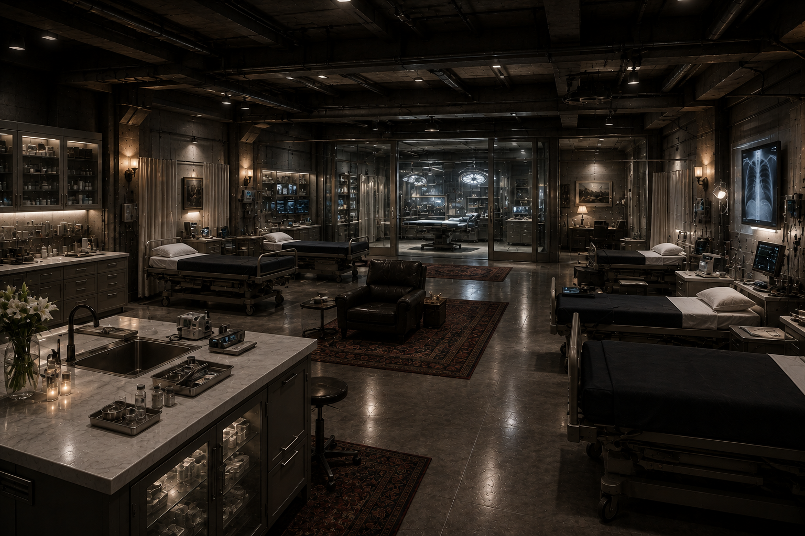

- Idade
- 54 anos
- Função
- Neurocirurgia / comando médico
- Base
- Comboio Hellsings
- Estado
- Em movimento
Quando o estoque termina e a rota falha, Alice transforma conhecimento em tempo — e tempo em vida.
Cuidar de alguém também é resistir.
Quando o estoque termina e a rota falha, Alice transforma conhecimento em tempo — e tempo em vida.
O arquivo mede a missão de Alice pelo atendimento que chegou às pessoas e pela vida que conseguiu preservar.
Estimativas reconstruídas de registros de triagem, cirurgia, evacuação e formação desde o Dia D. Uma pessoa pode aparecer em mais de um atendimento; o total de vidas preservadas é aproximado.
Da primeira triagem na Mansão Connor ao hospital do bunker e às rotas médicas do presente.

Quando os Hellsings voltaram com sobreviventes, Alice organizou o atendimento na propriedade. Ela distribuía funções, avaliava ferimentos e preparava os pacientes para seguir ao abrigo. Para cada pessoa que chegava, registrava um nome e o próximo cuidado necessário.
Jack havia investido quase um bilhão de dólares no complexo, que já possuía leitos, equipamentos de diagnóstico e salas cirúrgicas. Alice assumiu a ala médica e coordenou o atendimento de civis e Hellsings durante a chegada dos feridos e o confinamento.
Alice operou, tratou traumas e organizou o uso dos recursos médicos. O hospital tinha estrutura; ainda assim, era preciso cuidar de cada estoque e preparar mais pessoas para agir. Ela ensinou as filhas Diana, Mary e Isolde desde os fundamentos médicos até a preparar e realizar cirurgias sob sua orientação.
Com os Hellsings vivendo em movimento, Alice deixou as operações de campo como rotina e passou a coordenar medicina, recursos, contratos e equipes. Sua formação de combate continuou com ela; se uma ameaça alcançasse os pacientes, sabia proteger a si mesma e os outros.
Alice negociou o corredor médico ligado à Bacia Branca. A passagem permitiu que equipes de atendimento e busca se deslocassem com proteção, fazendo da negociação uma parte concreta do trabalho de salvar vidas.
Enquanto os Hellsings enfrentam a Dominus e procuram a estufa do governo, Alice organiza recursos, conhecimento e pessoas para examinar as plantas preservadas. Ela não promete uma cura pronta: prepara o grupo para descobrir o que ainda pode devolver vida à terra.
“Eu não conto as pessoas que conseguimos salvar. Eu lembro dos nomes.”
O arquivo fotográfico de Alice foi separado do prontuário principal. Entre no registro para consultar cada imagem individual.